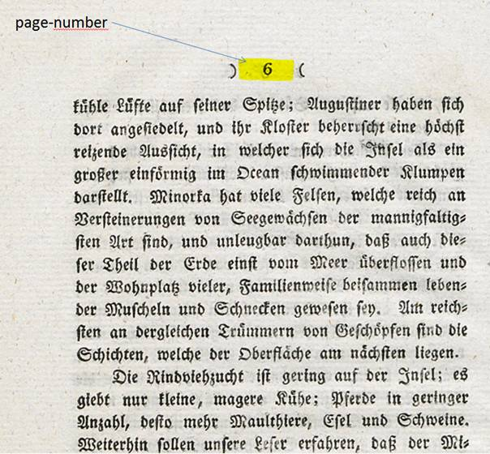
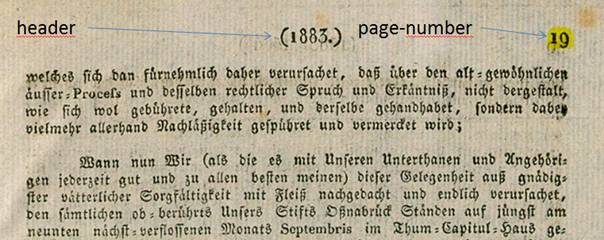

Seitenzahl (page-number)
Seitenzahlen werden als eigene Textregion behandelt und als Seitenzahl ausgezeichnet, egal wo sie sich auf der Seite befindet. Obwohl sie de facto ein toter Kolumnentitel ist, wird sie im Kontext der Ground-Truth-Erfassung stets getrennt von möglichen zusätzlichen Kolumnentiteln als Seitenzahl behandelt.

